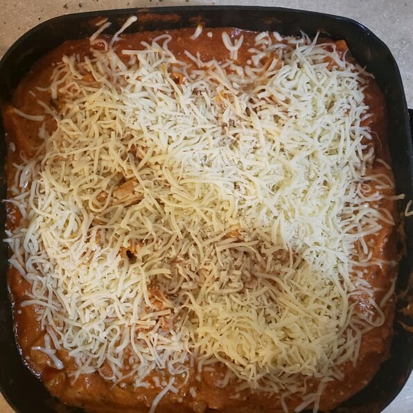

Lasagna with sausage, mushrooms, and lots of cheese is fast and easy on the stove top--and there's no compromise on flavor.
Heat a large skillet over medium high heat and add olive oil. Swirl to coat. Add the onion and saute until translucent, about 5 minutes. Add the sausage, red pepper, and mushrooms; saute until meat is cooked through, about 5 minutes.
Stir in the Ragu® Old World Style® Traditional sauce, broken lasagna noodles, water, and rosemary. Cover and turn heat down to medium-low.
Cook for 20 minutes, stirring occasionally, until the pasta is al dente. Remove the lid and add the ricotta, 2/3 of the cheese, and parsley; stir to combine. Top with remaining mozzarella and serve immediately.